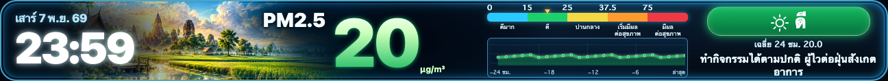
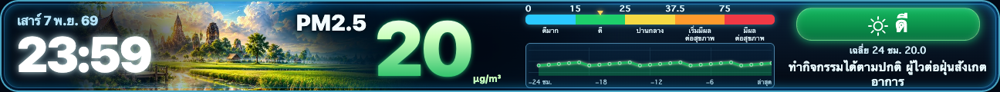
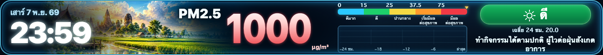

UTH LED · 7 NOV 2026 · OWNER APPROVED DESIGN + FINAL GRAPH TWEAK
PM2.5 · ขยับแถบสีและขยายกราฟไปทางซ้าย
ความกว้างกราฟเพิ่มจาก 101 เป็น 111 พิกเซลบนจอ LED 432×40 โดยคงขอบขวาและป้ายคำเตือนไว้ที่เดิม ส่วนตัวเลขหลายหลักใช้ Adaptive Layout เพื่อเว้นระยะจากหน่วย µg/m³
SIMULATED QA — ไม่ใช่ข้อมูลตรวจวัดจริง
ภาพทั้งหมดสร้างจาก PM2.5 renderer เดิมของระบบโดยใช้ข้อมูลจำลองเพื่อทดสอบการจัดวางเท่านั้น Weather และ Water Level ยังคงตามดีไซน์ที่อนุมัติแล้ว ยังไม่ได้ Deploy Production
เปรียบเทียบ Before / After
ก่อนปรับ · กราฟกว้าง 101 px

หลังปรับ · กราฟกว้าง 111 px

SIMULATED · สีเขียว / ดี · ตัวเลขภาพไม่ใช่ค่าฝุ่นปัจจุบัน
กรณีค่าฝุ่นหลายหลัก: 1000 µg/m³ (ทดสอบขอบเขต)

SIMULATED · ค่าจำลองที่ใช้ตรวจ Overflow เท่านั้น ไม่ใช่รายงานค่าฝุ่นจริง และกราฟว่างเพราะไม่ได้ส่ง History ในกรณีทดสอบนี้Candidate exact commit: b54afd1697719be7559e7f90849ac2d3ddba7f53 · Tests 522/522 PASS · Browser 432×40 DPR3 PASS · Physical LED/iPhone Safari UNVERIFIED
ดู PR #97 · ดูสามหน้ารอบก่อน